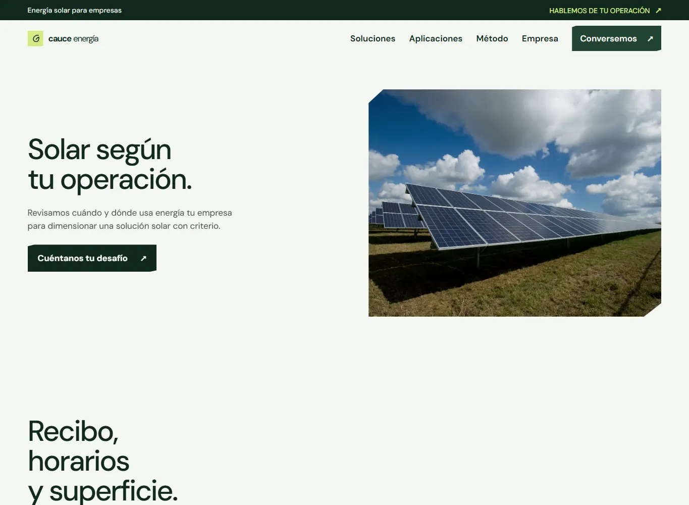

Objetivo
Presentar una oferta solar empresarial y mostrar qué información se revisaría antes de proponer un sistema.
Un sitio corporativo multipágina para presentar una empresa solar, explicar sus soluciones y ayudar a preparar una primera conversación.
Este concepto explora cómo una empresa de energía solar podría explicar el proceso de evaluación a equipos que operan instalaciones comerciales o industriales. El contenido lleva de una presentación breve a las soluciones, aplicaciones y método de trabajo.
Cauce Energía es una marca ficticia creada para esta demo. No corresponde a un proveedor real ni publica cifras de ahorro o instalaciones verificadas.
Presentar una oferta solar empresarial y mostrar qué información se revisaría antes de proponer un sistema.
Las soluciones energéticas pueden parecer abstractas. El sitio necesita explicar el proceso y orientar a quién todavía está evaluando.
Equipos y responsables de operaciones, instalaciones o sostenibilidad que comparan alternativas de energía para una empresa.
Verde profundo y lima conectan con el tema energético. La imagen de una planta solar tiene escala de portada; los interiores organizan el discurso por soluciones, aplicaciones y etapas.
Navegación entre seis páginas, menú adaptable, enlaces de anclaje y revelado discreto al desplazarse. El formulario de contacto prepara un resumen localmente; no envía datos a un servidor ni a un correo configurado.
HTML semántico, CSS y JavaScript nativos. Estilos y comportamiento propios, sin framework de interfaz.
Vistas capturadas desde la demostración publicada. Abre el sitio para recorrer las páginas internas.


PROYECTO SIGUIENTE